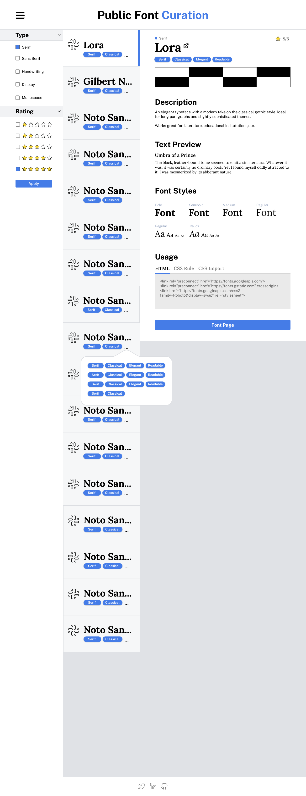
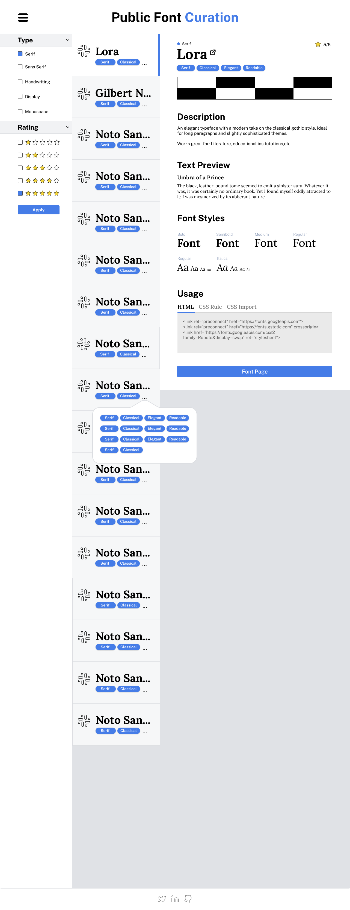

At this phase, I will take care of creating
content for the site as it is needed. This is a short, transitional period that occurs after the final mockup has been created and before development begins.
Typically, I will create basic graphics, the site favicon, write copy, and gather media like images and videos for use on the site. I will then package this all up and prepare it for development.
For this project I carried out a few tasks:
- Exported and packaged graphics, icons, and imagery.
- Exported documentation as PDFs containing key data such as branding guidelines, tools, and general notes.
- Researched a number of font websites and compiled a list of potential font candidates.

 
